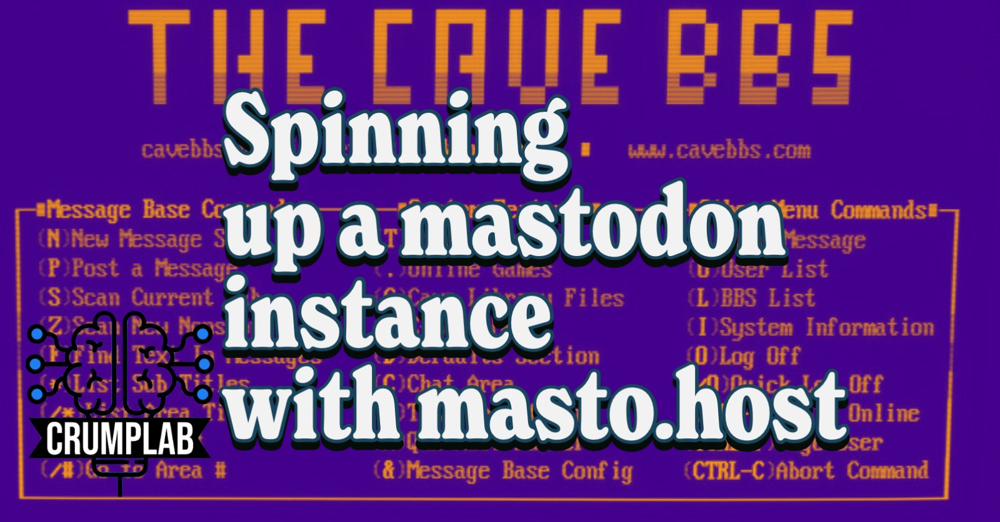

Spinning up a mastodon instance with masto.host: First try and notes
social
mastodon
I decided to try mastodon from inside my own instance, and this is brief guide to what I did and the questions I still have.
This weekend I followed some #Rstats folks from twitter to mastodon. I first landed at Fosstodon, and then made an account on mastodon.social, which became very slow due to server load. After digging around a bit and learning new words like #fediverse and activitypub, I decided to spin up my own instance of mastodon using masto.host. So, now you can find me https://bbs.crumplab.com/@MattCrump, or @MattCrump@bbs.crumplab.com.
I’m not totally sure why I put myself into my own mastodon instance, but I’ll talk reasons later on. For now, this is an excuse to learn new web stuff while benefiting from a rich social network. Without further ado.
Setting up a mastodon instance on masto.host
I saw Jon Henshaw post about running his own mastodon instance on masto.host, and that seemed interesting, so I tried it:
https://twitter.com/henshaw/status/1587072753034842118
Here’s what happened.
- Went to masto.host.

- I chose the moon plan because it’s just gonna be. But, I noted that it is possible to upgrade and downgrade, so if I wanted to invite more people to my little bbs experiment I could do that. Or, if you are setting this up for a group, it seems pretty easy to grow larger (at least up to 2000 users for 89/month).

- After clicking “buy now” there is a decision to use your own domain or subdomain, or a masto.host subdomain.

A quick aside for domain names. I have been using R Markdown and more recently Quarto for lots of purposes, including creating this website and blog. All of the source code for compiling this website and blog is in a github repository, and served from github pages. At some point I used namecheap to acquire my domain crumplab.com. This allowed me to serve my website from that domain (there is an option to use your own domain on github pages).
In addition, it is possible to add subdomains. For example, I have a jatos server running on digital ocean for online experiments, which has it’s own subdomain on crumplab.com.
For mastodon I chose “Your domain”, and came up with the subdomain bbs.crumplab.com as a throwback to the bulletin board services I used to use as a kid.
- I don’t have screen shots for some of the next steps, but basically you enter your credit card information. In my case, immediately after purchasing I got a warning from mastodon that
bbs.crumplab.comwas not found on my DNS servers. Masto.host kindly gives clear instructions on what I needed to do in order to add my subdomain, which involved adding a new cname entry, and waiting for it to propagate. - After masto.host detected my subdomain, it automagically created a new mastodon instance.

And, when installation was finished it updated to let me know. This all took about 15 minutes from start to finish, and most of the time was waiting for DNS issues to be resolved.

Checking out the instance
My mastodon instance was now running, and I could access it by going to the subdomain bbs.crumplab.com.

The next steps are to create an account for yourself, and then give yourself administrator privileges. I chose “MattCrump” for the account name, which makes me “@MattCrump@bbs.crumplab.com”.
After logging in as a new user you get a default mastodon user account. I appear to be running Mastodon v 3.5.3, which is not the bleeding edge that mastodon.social is running (?). I don’t think I can edit my posts on this version, and I’m not sure yet if I can upgrade the version through masto.host.
Admin stuff
My first big question was how do I assume administrator privileges and turn off the ability of anyone to make an account on this instance. That part was easy on masto.host.
- Make a user account on your instance
- Go to masto.host, click on the hosting domain, and then “change user role” on the server option
- Enter your account name and presto chango you are the admin.

When you go back to your mastodon account, there are new admin options in the settings.

The first thing I did was go to “Site Settings” and change the registration to “Nobody can sign up”

And, that’s basically where I am at.
Gonna take a break, and continue this post sometime later today.
General thoughts so far
It was very easy for me to set up a new mastodon instance. Almost too easy. For example, if I had the intention of creating an instance that other people could join, the process would be similarly easy, but I expect the realities of doing admin and moderation require a much larger time investment. I don’t have the bandwidth to think about running a larger instance right now, so I’m going to stick to learning the system in this person-sized instance.
All by myself
So far the experience of being “alone” on my own instance is A OK. The default feeds work a little bit differently. My “local” feed is the same as my personal timeline, because no one else is on the instance. My home feed I guess is the same as it would be if I was on a shared instance. I see posts from the people I follow, and I see the things they are boosting. I’m not sure I totally understand what I am seeing on the federated feed, but it appears to be the people I follow, but not what they are boosting. It’s not a fire-hose of posts.
I still don’t know how to add things to lists.
Attempting to “micro-blog” with a personal mastodon instance has been rewarding so far, especially to prompt thinking about how I engage with social media in general, and how I curate/save/share what I’m doing. Everything I post on the instance is there, I guess for me to deal with and make decisions about.
There is a great deal of topic worth engaging on, and I’m hoping this process can help me navigate my own engagement.
Custom emojis
When I joined Fosstodon I quickly learned they have a custom emoji for R, that Mastodon.social has a custom emoji for the Rocinante, and that instances can have their own custom emojis.
Clearly I must confirm.
Cool, there are already lots of custom emojis on other instances, and it looks like the admin can approve use of custom emojis.

BRB.
I got Rstats and few others, but I really want :blobcatfacepalm:, which doesn’t appear on the list.
This is helpful https://emojos.in
Hmmm, I have questions. I was clicking emojis and “enabling” them, but I’m not sure whether this means I can use them. I found a version of the :rstats: emoji and copied it, and did a test post. It worked, that’s cool.
Had to manually copy :blobcatfacepalm:, and got it working.